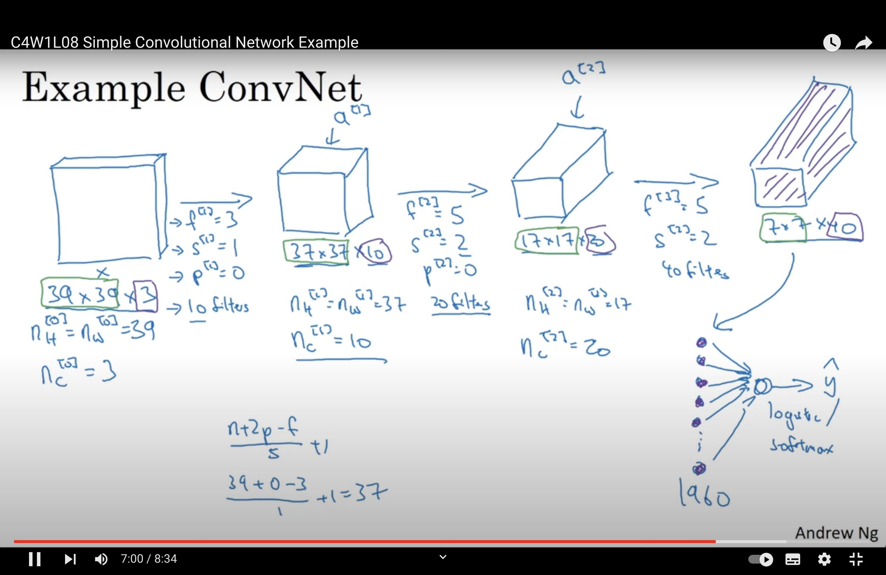

Final Review Notes#
Overfitting and Underfitting#
Model |
Overfitting Techniques |
Underfitting Techniques |
|---|---|---|
Linear Regression |
- Ridge or Lasso regularization - Feature selection - Avoid high-degree polynomials |
- Polynomial features - Reduce regularization strength |
Decision Trees |
- Tree pruning - Random Forest or ensemble methods |
- Increase tree depth - Fewer constraints (e.g., min samples per split) |
SVM |
- Increase regularization \( C \) - Simpler kernel (e.g., linear) |
- Decrease regularization \( C \) - Complex kernel (e.g., RBF) |
Neural Networks |
- Dropout - Weight regularization - Smaller network - Data augmentation - Early stopping |
- Larger network - More epochs - Complex architectures |
k-NN |
- Increase \( k \) - Distance weighting |
- Decrease \( k \) |
Logistic Regression |
- L1 or L2 regularization - Feature selection |
- Polynomial features - Reduce regularization strength |
Linearity#
Aspect |
Linearly Separable Data |
Non-Linearly Separable Data |
|---|---|---|
Choice of Model |
- Linear models (e.g., Linear SVM, Logistic Regression) |
- Non-linear models (e.g., Kernel SVM, Decision Trees, Neural Networks) |
Feature Engineering |
- Minimal transformations required |
- Polynomial features, interaction terms, or domain-specific transformations might be beneficial |
Regularization |
- Might require stronger regularization to prevent overfitting due to perfect separation |
- Regularization still important, but the balance might differ |
Model Complexity |
- Simpler models often suffice |
- More complex models may be needed to capture data patterns |
Training Time |
- Typically faster due to simpler models |
- Potentially longer, especially with non-linear algorithms |
Interpretability |
- Linear models are usually more interpretable |
- Complex models (e.g., deep neural networks) might be harder to interpret |
Validation Strategy |
- Standard validation techniques apply |
- Ensuring diverse data in validation sets is crucial, given data’s complexity |
Risk of Overfitting |
- With perfect separation, there’s a risk of overfitting |
- Risk exists, especially with very flexible models. Techniques like pruning, dropout, or early stopping might be essential |
Kernel Methods (for SVM) |
- Linear kernel is often suitable |
- Non-linear kernels (e.g., RBF, polynomial) might be required |
Optimization algorithms#
Optimization algorithms aim to find the best solution (or solutions) to a problem from a set of possible solutions. In machine learning and deep learning, the primary goal of an optimization algorithm is to minimize (or maximize) an objective function, typically known as the loss or cost function. By adjusting the model’s parameters, optimization algorithms try to find the parameter values that result in the lowest possible loss for the given data.
Optimization Algorithm |
Description |
|---|---|
Gradient Descent (Batch) |
Updates the parameters in the direction of the negative gradient of the entire dataset at each iteration. |
Stochastic Gradient Descent (SGD) |
Updates the parameters using only one training example at a time. It can be noisier but often faster than batch gradient descent. |
Mini-batch Gradient Descent |
A compromise between batch and stochastic gradient descent: updates parameters using a subset (or “mini-batch”) of the training data. |
Momentum |
Uses a moving average of past gradients to accelerate convergence and reduce oscillations. |
Nesterov Accelerated Gradient (NAG) |
A variant of momentum that computes the gradient after the momentum update, leading to more accurate parameter updates. |
AdaGrad |
Adjusts the learning rate for each parameter based on the historical squared gradients. |
RMSProp |
Modifies AdaGrad to use a moving average of squared gradients, preventing the learning rate from decreasing too rapidly. |
Adam |
Combines elements of Momentum and RMSProp. Maintains moving averages of both gradients and squared gradients. |
Adadelta |
An extension of AdaGrad that reduces its aggressive, monotonically decreasing learning rate. |
FTRL (Follow-the-Regularized-Leader) |
Especially suited for large-scale and online learning. Often used with L1 regularization for feature selection. |
L-BFGS (Limited-memory Broyden-Fletcher-Goldfarb-Shanno) |
A quasi-Newton method that approximates the second-order derivative (Hessian) to guide the parameter updates. Suitable for smaller datasets. |
Conjugate Gradient |
Uses conjugate directions (instead of just the gradient) to avoid re-visiting previously minimized directions. Used for non-linear optimizations. |
Optimisation Algorithm (NN vs Other)#
Optimization algorithms in neural networks (NN) and traditional machine learning models serve the same fundamental purpose: minimizing (or maximizing) an objective function, typically the loss or cost function. However, there are differences in the challenges posed by these models, leading to nuances in the optimization techniques used. Let’s explore these differences:
Scale of Parameters:
Neural Networks: NNs, especially deep networks, can have millions to billions of parameters. Optimizing such a large parameter space introduces challenges not typically found in traditional models.
Traditional ML Models: These models often have fewer parameters. For instance, linear regression has one parameter for each feature (plus a bias).
Non-Convexity:
Neural Networks: The loss surfaces of deep NNs are non-convex, meaning they have many local minima, saddle points, and complex structures. This makes the optimization landscape challenging.
Traditional ML Models: Some traditional models (like linear regression with a squared error loss) have convex loss surfaces, ensuring a unique global minimum.
Stochasticity:
Neural Networks: Due to their size and complexity, NNs are often trained using stochastic methods (like mini-batch gradient descent) to speed up convergence.
Traditional ML Models: While stochastic methods can be used, many traditional algorithms can efficiently process the entire dataset in one iteration.
Regularization Techniques:
Neural Networks: NNs introduce unique regularization techniques like dropout, batch normalization, and weight normalization to combat overfitting and aid optimization.
Traditional ML Models: Regularization techniques for traditional models often revolve around adding penalty terms to the loss (e.g., L1 and L2 regularization).
Learning Rate Scheduling:
Neural Networks: Adaptive learning rate techniques and schedulers (like learning rate annealing or cyclical learning rates) are more commonly employed in NN training to ensure convergence in complex landscapes.
Traditional ML Models: While adaptive learning rates can be used, many traditional algorithms converge well with fixed or simpler learning rate strategies.
Optimization Algorithms:
Neural Networks: Advanced optimization algorithms like Adam, RMSProp, and Nadam, which combine momentum and adaptive learning rates, are popular in deep learning.
Traditional ML Models: Simpler algorithms like gradient descent, conjugate gradient, and L-BFGS are often sufficient for these models.
Challenge of Vanishing/Exploding Gradients:
Neural Networks: Deep networks face the issue of vanishing or exploding gradients, which can hinder training. Techniques like gradient clipping and careful weight initialization are used to mitigate this.
Traditional ML Models: These issues are less prevalent in traditional models.
Parallelism and Hardware Acceleration:
Neural Networks: Training large NNs benefits significantly from parallelism and hardware acceleration (e.g., GPUs). Optimization algorithms are sometimes adapted to better leverage these hardware capabilities.
Traditional ML Models: While some models can be parallelized or hardware-accelerated, the gains are often less pronounced than in deep learning.
In summary, while the core principles of optimization remain consistent across neural networks and traditional machine learning models, the scale, complexity, and challenges posed by deep learning have led to the development and adaptation of various optimization strategies specific to neural networks.
SVM lamda and C#
In the context of a soft-margin SVM, \( \lambda \) (often denoted as \( \alpha \) in many textbooks) and \( E \) (often referred to as \( \xi \) or slack variables) have specific interpretations:
Lagrange Multipliers (\( \lambda \) or \( \alpha \)):
\( \lambda = 0 \): The training example is correctly classified and lies outside the margin. It doesn’t influence the decision boundary.
\( 0 < \lambda < C \): The training example lies on the margin’s boundary and is correctly classified. It is a support vector.
\( \lambda = C \): The training example is wrongly classified, despite its position to the boundary.
\( \lambda > C \): impossible
Slack Variables (\( E \) or \( \xi \)):
\( E = 0 \): The training example is correctly classified and lies on the correct side of the margin.
\( 0 < E < 1 \): The training example is correctly classified but lies inside the margin.
\( E = 1 \): The training example lies exactly on the decision boundary.
\( 1 < E < 2 \): The training example is misclassified but lies within the margin.
\( E > 2 \): The training example is misclassified and lies outside the margin on the wrong side.
So, for the points A, B, C, and D, you’d use the criteria listed above to determine the values of \( \lambda \) and \( E \) based on their positions relative to the decision boundary and margin. The exact values would depend on the specific locations of these points in relation to the SVM’s decision boundary and margin.
CNN#
{kind=link}
Kernel Proof#
sum#
product#
exp#
To prove that a function \( k \) is a valid kernel, one generally needs to demonstrate that the kernel matrix (or Gram matrix) constructed using \( k \) is positive semi-definite (PSD) for any set of input data points. Here are the general approaches to prove this:
Direct Method:
Construct the Gram matrix \( K \) using the kernel function \( k \) for any set of data points.
Show that for any vector \( \alpha \) of appropriate dimensions, the value of \( \alpha^T K \alpha \) is non-negative. If this is true for all such \( \alpha \), then \( K \) is PSD, and \( k \) is a valid kernel.
Using Kernel Properties:
Closure Properties: Kernels have several closure properties. For instance, if \( k_1 \) and \( k_2 \) are kernels, then the following are also kernels:
\( c \cdot k_1 \) for \( c > 0 \)
\( k_1 + k_2 \)
\( k_1 \times k_2 \)
\( f(x) \cdot k_1(x, y) \cdot f(y) \) for any function \( f \)
Using these properties, one can construct new kernels from known kernels.
Mercer’s Theorem:
Mercer’s theorem provides conditions under which a function can be expressed as an inner product in some (possibly infinite-dimensional) feature space, and therefore is a kernel. If a function satisfies Mercer’s conditions (related to non-negative integrals over the product of the function with test functions), it is a valid kernel.
Feature Map Representation:
Demonstrate that there exists a feature map \( \phi \) such that \( k(x, y) = \langle \phi(x), \phi(y) \rangle \), where \( \langle \cdot, \cdot \rangle \) denotes the inner product. If you can explicitly find or describe such a feature map, then \( k \) is a kernel.
Using Existing Kernels:
Sometimes it’s easier to derive new kernels based on known kernels. If you can express a function in terms of operations and compositions that preserve the kernel property, then the function is a valid kernel.
Eigenvalues:
Another way to prove a matrix is PSD is by showing all its eigenvalues are non-negative. However, computing eigenvalues might not always be feasible, especially for infinite-dimensional spaces.
Generative vs Discriminative#
Of course, I can help clarify the difference between generative and discriminative models.
Generative models attempt to model how the data is generated. They capture the joint probability distribution \( P(X, Y) \), where \( X \) is the feature and \( Y \) is the label or class. Using this joint distribution, they can compute the conditional probability \( P(Y|X) \) for prediction.
Discriminative models focus on distinguishing between classes. They model the boundary between classes and learn the conditional probability \( P(Y|X) \) directly without worrying about how the data is generated.
Criteria |
Generative Models |
Discriminative Models |
|---|---|---|
Description |
Model how the data is generated. |
Model the boundary between classes. |
What They Learn |
Distribution of each class. |
Boundary between classes. |
Examples |
Gaussian Mixture Models, Naïve Bayes, Hidden Markov Models. |
Logistic Regression, SVM, Random Forests, Neural Networks. |
Advantages |
Can generate new data points. More robust with limited data. |
Often more accurate in classification with ample data. |
Drawbacks |
Might be less accurate in classification tasks. |
Cannot generate new data points. |
Analogy |
Studying individual apples and oranges. |
Looking directly at differences between apples and oranges. |